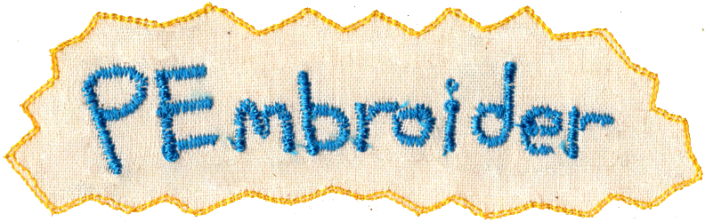
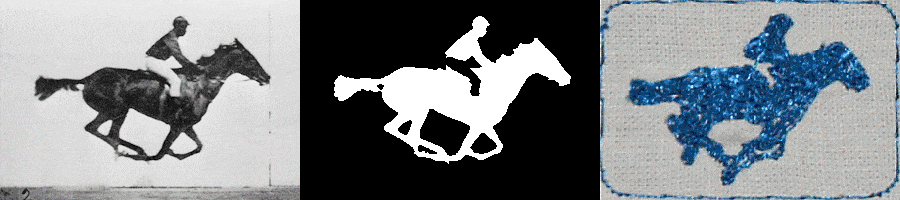
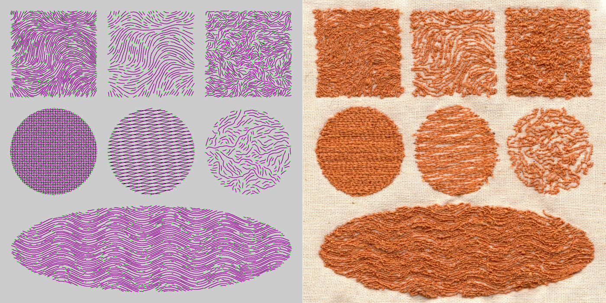
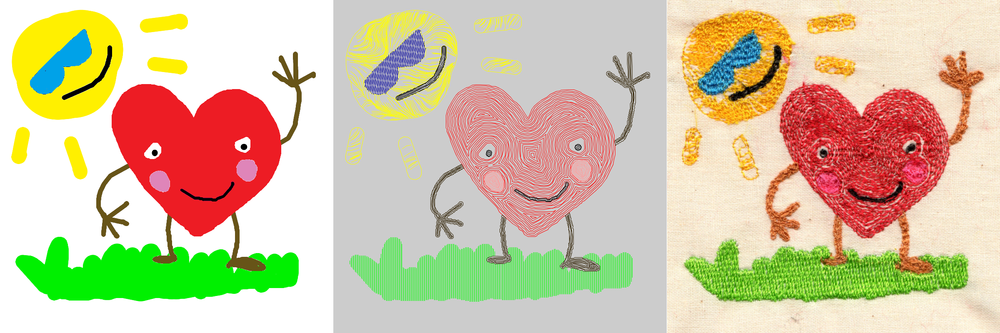

page in progress
Pembroider
Github Page Here
Developed with Golan Levin and Lingdong Huang in summer 2020
PEmbroider is an open library for computational embroidery with Processing. PEmbroider was developed during Endless March 2020 at the CMU Frank-Ratchye STUDIO for Creative Inquiry by Golan Levin, Lingdong Huang, and Tatyana Mustakos, with generous support from an anonymous donor and the Clinic for Open Source Arts (COSA) at the University of Denver
"Intended primarily for artists, craftspersons, educators, makers, and schools, PEmbroider is free, open-source software released under both the GNU General Public Licence (GPLv3) and the Anti-Capitalist Software License (ACSL 1.4).""
PEmbroider can be used to create original designs through computational coding, drawing, and converting existing files.
Examples
An embroidered frame by frame redering of the Muybridge horse animation loop

Different Hatching Patterns

Rendering a multi-color design with different fill patterns
